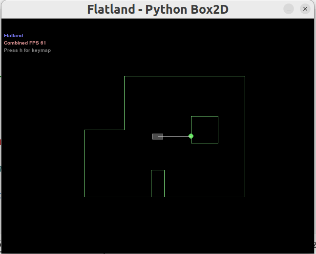

The purpose of this lab is to achieve robot locolization in a grid map using Bayes filter. In this lab, the same area map from lab 9 is built in the simulator and I will implement Bayes filter algorithm to try to track the real trajectory of the virtual robot moving in the simulator.
The Bayes filter algorithm will be built in this lab and its performance will be evalueated using the simulator to ensure it works properly, so that it can be deployed on the physical robot in the next lab.
 Simulator with Area Map & Virtual Robot
Trajectory Plotter
Lab Task: Grid Localization
Grid in Simulator
Robot localization in this lab basically means determine the state (coordinates and orientation) of the robot after each movement. The robot state is defined as 3 dimensional in the simulator and is given by (x, y, θ). The robot’s world (grid map) is a continuous space that spans from:
- [-1.6764, +1.9812) meters or [-5.5, 6.5) feet in the x direction.
- [-1.3716, +1.3716) meters or [-4.5, +4.5) feet in the y direction.
- [-180, +180) degrees along the theta axis.
The virtual robot shown in the simulator image before is at the state of (0, 0, 0) (initial state). The X-axis increases from left to right, the Y-axis increases from bottom to top and the Theta-axis increases if robot spins clockwise and decreases if robot spins counter-clockwise.
Discretized Grid Space
Theoretically there can be infinitely many poses for the robot within this bounded space. Thus the continuous state space is descretized into a finite 3D grid space, which can reduce the accuracy of the estimated state as the robot states within the same grid cell cannot be distinguished effectively, but this allows the belief over a finite set of states to be computed in reasonable time.
The grid map is descretized in to cells that are identical in size. The size of each grid cell (i.e resolution of the grid) along the (x, y, θ) are 0.3048 m, 0.3048 meters and 20 degrees respectively. Therefore, the continous state space is discretized into cells as:
- X-axis cell: [0, 12); 0.3048 m per cell.
- Y-axis cell: [0, 9); 0.3048 m per cell.
- Theta-axis cell: [0, 18); 20 degrees per cell.
 3D Discretized Grid Visual
3D Discretized Grid Visual
Bayes Filter Algorithm (theory)
In this lab, there are two steps for each robot movement that combines to form the trajectory:
1. A cell-based action characterized by three parameters: rotation 1, translation, rotation 2.
2. An observation process which takes ToF sensor readings every 20 degrees by spinning 360 degrees and yield an array containing 18 distance measurements.
The total number of discretized grid cells along each axis are (12,9,18), where each cell stores the probability of the robot’s presence at that cell. The belief of the robot is therefore represented by the set of probabilities of each grid cell and these probabilities should sum to 1. The Bayes filter algorithm updates the probability of the robot’s presence in each grid cell as the robot movement progresses. The grid cell(s) with the highest probability (after each iteration of the bayes filter) represents the most probable pose of the robot. Thus the most probable cells across different time steps characterize the robot’s trajectory.
The main task for this lab is to write the Python code to implement Bayes Filter Algorithm which can be summarized as below:
Bayes Filter Algorithm
Inputs
where the function requires three inputs:
1. bel(x_t-1): representing the belief of the previous state of the robot. It is a 3D matrix containing probabilities of the robot's previous state in each dimension.
2. u_t: representing control inputs (rotation 1, translation and rotation 2) that make robot do a movement.
3. z_t: the 18 sensor readings of current robot state, which is obtained by the second step of a robot movement as mentioned before.
The algorithm basically contains two steps: prediction step and update step.
Prediction Step
1. x_t: describes the state of the robot in timestep t (current state), which includes all possible discretized states in 3 dimensions.
2. bel_bar(x_t): means the prior belief for the possibility of a robot being in state x_t.
3. P(x_t | u_t, x_t-1): means the robot transition probability (action model). This is the probability that the robot end up in a current state (x_t) given a control input (u_t) and a previous state (x_t-1).
To conclude, for each current state (x_t), this step sums up the probabilities of ending up with current state from all possible previous states with a given odometry motion.
Update Step
1. bel(x_t): updated belief for current state.
2. eta(x_t): is the normalization symbol, meaning that the result needs to be normalized.
3. P(z_t | x_t) represents the sensor measurement probability (sensor model). This is the probability that the sensor readings obtained by the second step of a single robot movement are correct given the robot is at current state.
To conclude, for each current state, this step multiplies prior belief (bel_bar) with the prababilities of correct distance measurements at current state, then the result is normalized.
Bayes Filter Algorithm (Python code implementation)
After the principle of Bayes filter algorithm is explained, it is implemented using Python and eventually tested in the simulator.
Compute_Control
The first function I need to implement is the one to compute the actual action the robot conduct to move from one state to the other (the first step of the robot movement).
As the image demonstrates below, the action basically contains three steps:
1. The robot needs to rotate for a certain angle (delta_rot1) so that it is heading towards the next state position.
2. Then it translates (delta_trans) to a new grid cell on the map.
3. Eventually, it rotates to a new angle (delta_rot2) to reach its final state.
Demonstration of Action
The formulas to calculate each variables are given as below:
Formulas to Compute Action
Therefore, the compute_control function can be defined based on the formulas.
Compute_Control Function
The function returns the actual action in the form of delta_rot_1, delta_trans, delta_rot_2.
Odometry Motion Model
This function calculates the probability of ending up with current state (cur_pose) given a control action (u) and robot's previous state (prev_pose). Here the given control action u can be different from the actual action computed using the previously defined function compute_control which can be named as actual action.
To compute the probability, Gaussian function is used to model noise with a mu which determines the mean and a sigma determines the standard deviation. Eventually, the probbility can be computed as:
Probability Calculation Formula
where, the sigma for each type of value is given in the BaseLocalization class as a member variable.
The function is implemented in Python as:
Odometry Motion Model Function
Prediction Step

For now, I 've already had functions and variables to conduct prediction step of the Bayes filter. In this prediction step function, two loops are required which are both responsible for going through all the possible 3-dimensional states. The function can hence update bel_bar for each state, and P(x_t | u_t, x_t-1) of each state can be computed using the defined function odom_motion_model
The prediction_step is defined as:
Prediction Step Function
Sensor Model
This function computes the probability of correct sensor distance measurements given current state. Similar as before, the probability is obtained using Gaussian function. The function requires an input obs containing true (correct) measurements of distance in a state. The sensor measured distances can be obtained by calling loc.obs_range_data variable. Therefore, the probabilities of each out of 18 sensor measurements can be calculated and stored in one array.
The sensor_model function is defined as:
Sensor Model Function
Update Step
Now that I have defined function for sensor model, it is time to implement the final update step of the Bayes filter. It needs to be noticed that to use the sensor_model function, the obs parameter needs to manually defined by calling the mapper.get_views. The final sensor probability is calculated by multiplying the probabilities obtained by sensor_model function. By multiplying the sensor probability and belief of each current state, the the current state belief can be updated.
The update_step function is defined as:
Update Step Function
Open Loop Control
Texts and Videos by Zhongqi Tao